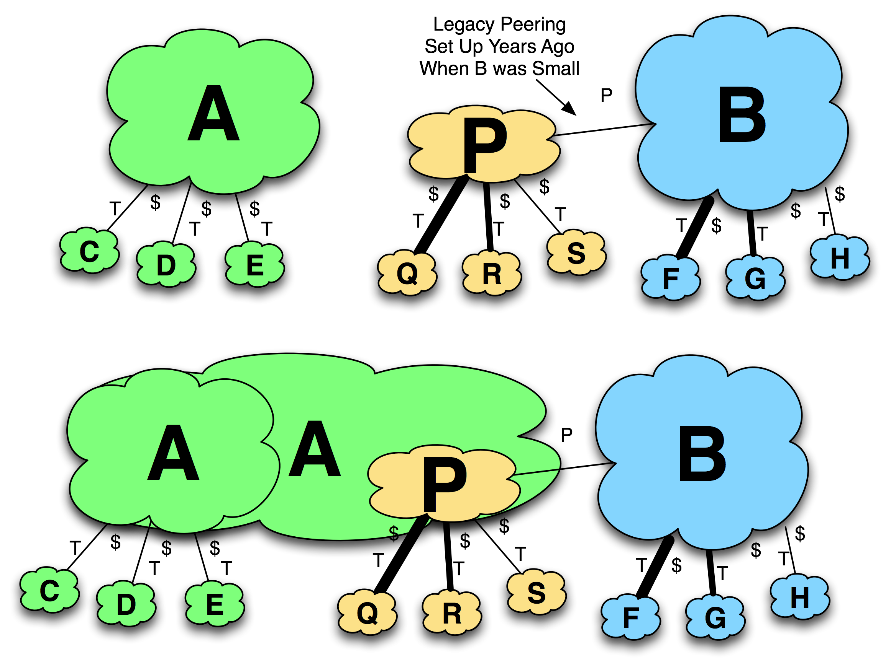

Tactic 17. Purchase a Well-Peered ISP
This tactic is to simply purchase an ISP that has the desired peering you seek. This tactic was more popular in the 1990s than it is today, but it is worth noting (see Figure 11-32).
Notes from the field.
Acquiring Tier 1 ISP Status
As discussed earlier, Level 3 was unable to obtain peering with the Tier 1 ISPs in the early days, so it acquired networks that had already established peering with a couple of Tier 1 networks. Under the assumption that this peering would transfer to the larger aggregate company, Level 3 acquired the ISP in order to leverage the pre-established peering arrangement and build upon it. In Australia, the ACCC pressured Telstra to peer with a few of the largest ISPs in Australia. Within a few years of doing so, each of these ISPs was acquired by foreign ISPs who instantly became Tier 1 ISPs in Australia. Optus was acquired by SingTel (the Singaporean Tier 1 ISP), Connect.com was acquired by Telekom New Zealand (a Tier 1 ISP in New Zealand,) and Oze-mail was acquired by Verizon (a Tier 1 ISP in the U.S.).

Figure 11-32. Identify who has valuable peering relationships.
Some would say that this tactic is the easiest one to execute, but some peering coordinators advise caution here. Many peering contracts (Bi-Lateral Peering Agreements) have 30-day termination clauses, so the peering may not last long beyond the acquisition date.
In the 1990s, business people started trying to quantify the value of a peering relationship. For example, those peering relationships with a written contract may be used on the balance sheet as an asset to be used when valuing the company for acquisition.